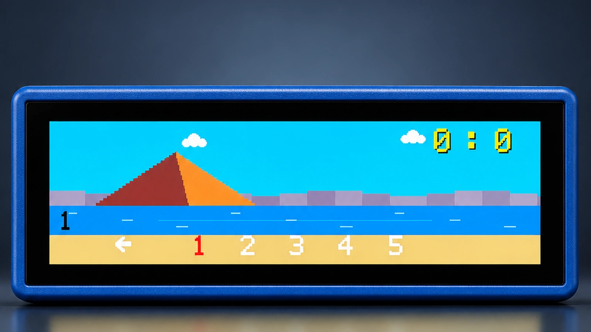

FLY
Catch playful targets
A light, game-like way to get used to gyro aiming and following quick movement.
Illustrative product render; final appearance may vary.

READY-TO-USE GYRO SIMULATOR
A compact, standalone simulator for virtual Olympic Trap practice. Move naturally with the device, follow a flying clay and review the session afterwards.
Battery and cardboard holder included · Preinstalled software · No firmware installation required
Illustrative product render; final appearance may vary.
FOUR WAYS TO PRACTISE
TrapFan combines simple motion-controlled practice with on-device review. It is a simulator, not a replacement for live coaching or range practice.
FLY
A light, game-like way to get used to gyro aiming and following quick movement.
Illustrative product render; final appearance may vary.

MOSQUITO
Short, quick-moving targets for practising smooth visual tracking and touch timing.
Illustrative product render; final appearance may vary.

TRAP
Virtual 25-target practice from five stations, with motion-controlled aiming and touch shots.
Illustrative product render; final appearance may vary.
TRAP COACH
COACH helps you review movement onset, estimated speed, target and device traces, first-shot timing and virtual results. The measurements are simulator data, not certified live-shooting performance.
See what COACH recordsREADY FOR THE FIRST SESSION
Each €99 device is tested and supplied with preinstalled software, a battery and a cardboard holder. A microSD card is not included; it is only needed for optional COACH export.
WHAT IS INCLUDED
Shipping is additional. Checkout is not open yet.
THE CHALLENGE FOREST
Explore the voluntary, illustrative challenge forest: buy one for a friend, hand over your own device or simply share the idea. No personal addresses are ever public in the tree.